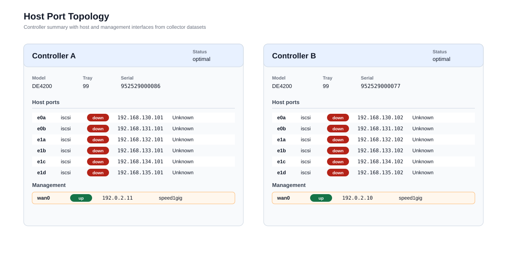
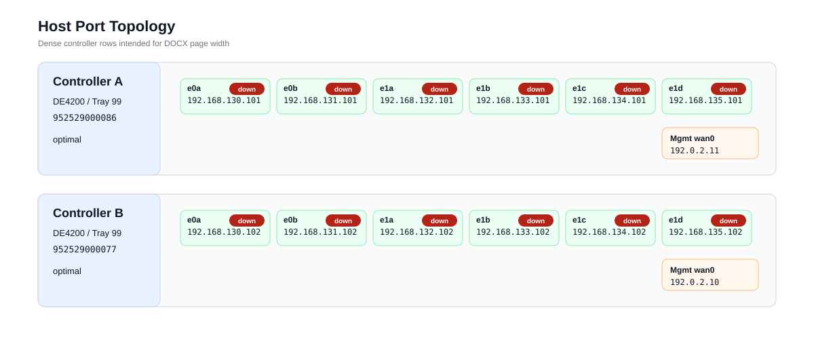
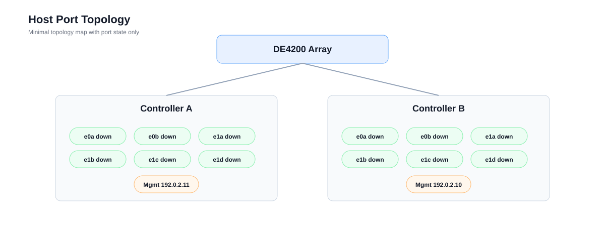

Generated from C:\Github\LNV.AsBuiltDoc.Assembler\bundle\b844bba2-c02f-4139-a656-21a1a511d95f\datasets\Lenovo.DE\collector-out\de-prod-01\target_de-prod-01\system_1_DE4200_Rack4.
C:\Github\LNV.AsBuiltDoc.Assembler\bundle\b844bba2-c02f-4139-a656-21a1a511d95f\datasets\Lenovo.DE\collector-out\de-prod-01\target_de-prod-01\system_1_DE4200_Rack4


